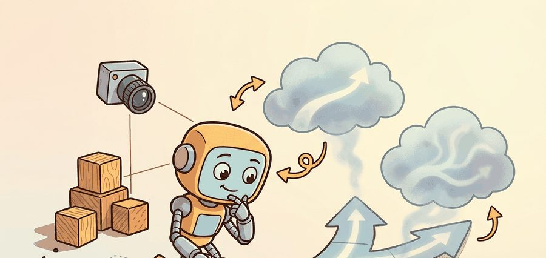
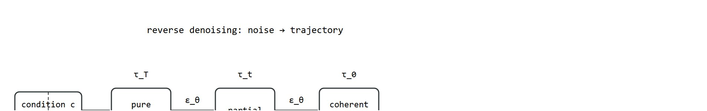
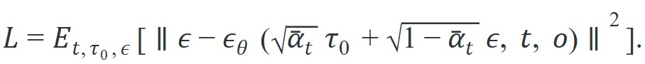

Do not predict the next action; predict the next chunk of actions, then denoise the whole chunk until it is consistent with what the camera just saw.
An Action-Diffusion Policy

A robot arm reaching for a cup does not need a single next action; it needs an entire arc of motion that stays coherent from grasp to lift. Classical planners enumerate states; neural policies predict one step at a time and jitter. Diffuser and Decision Diffuser take a third route: start from pure noise shaped like a full trajectory and denoise it into a physically consistent plan in one shot. Decision Diffuser goes further, letting you dial in a desired return so the same model can plan cautiously or ambitiously on demand. As of 2024, this approach is closing the gap between offline demonstration data and real-time robot control. You will derive the denoising objective for trajectories, trace how return conditioning steers the sample, and understand when to choose DDPM versus DDIM sampling for a live control loop.
This section assumes familiarity with the denoising score-matching objective and the forward diffusion process introduced in section 41.1, and with the receding-horizon control pattern described in section 7.5. The return-conditioning mechanism of Decision Diffuser is grounded in reward design concepts covered in section 18.2. The ideas here are extended in section 41.3, which applies generative trajectory planning to score-guided search, and in section 22.4, which covers Diffusion Policy as the practical robotics deployment of action diffusion.
Diffuser and Decision Diffuser solve related but different planning problems, as Figure 41.2A contrasts: Diffuser samples trajectories that satisfy start-state and goal constraints, while Decision Diffuser samples trajectories that are also conditioned on desired return or value targets. Both belong to a broader family of action-diffusion methods whose practical robotics workhorse is Diffusion Policy: instead of denoising a full offline trajectory, it denoises a short chunk of future actions conditioned on the latest visual observation, then executes part of that chunk before replanning.
For robotics, the difference between these methods matters whenever the task objective is richer than "reach the goal." Return conditioning can favor high-reward but risky plans unless it is paired with explicit feasibility or safety filtering, and observation-conditioned action chunking trades a longer planning horizon for tight, reactive control at execution time.
A trajectory that looks coherent in noise space is not yet a plan; it becomes one only after the full denoising chain agrees on every joint angle at every time step. Figure 41.2B diagrams this reverse chain: a fixed condition steers the noise tensor through intermediate partial trajectories until it settles into a coherent plan.

A model earns its place only when it improves action. In Diffuser And Decision Diffuser, the reader should keep asking which decision changes, which uncertainty is exposed, and which failure mode becomes easier to diagnose.
Action-diffusion methods are trained with the denoising score-matching loss. Given a clean action sequence $\tau_0$ conditioned on observation $o$, sample a timestep $t$ and Gaussian noise $\epsilon$, form the noised sample using the forward closed form (a single algebraic formula that jumps directly from the clean trajectory to its noisy version at step $t$, avoiding $t$ sequential noising steps), and ask the network to predict the noise it sees:

This is a regression on noise, not on actions, which is what lets the model represent a multimodal action distribution: many distinct $\tau_0$ values are consistent with the same observation, and the noise objective does not collapse them to an average. Diffuser uses the same loss over full trajectories $\tau=(s_0,a_0,\dots,s_H,a_H)$ conditioned on state or goal; Decision Diffuser adds a return target $\hat R$ to the conditioning $c$, turning "sample a plausible future" into "sample a plausible future likely to achieve this return."
How the return target actually steers sampling. Decision Diffuser trains the denoiser twice, once with the return conditioning present and once with it dropped (replaced by a null token), a scheme called classifier-free guidance. At sampling time, the model computes both the conditioned noise prediction $\epsilon_\theta(\tau_t, t, c)$ and the unconditioned prediction $\epsilon_\theta(\tau_t, t, \varnothing)$, then extrapolates away from the unconditioned direction: $\hat\epsilon = \epsilon_\theta(\tau_t, t, \varnothing) + w\,\bigl(\epsilon_\theta(\tau_t, t, c) - \epsilon_\theta(\tau_t, t, \varnothing)\bigr)$, where guidance weight $w>1$ pushes the sample further toward trajectories the conditioned model favors and $w=1$ recovers plain conditional sampling. This is the concrete mechanism behind the "dial in a desired return" claim in the Big Picture callout above: raising $w$ trades sample diversity for stronger adherence to the requested return, and it is why the Practical Recipe below advises clipping the requested return before sampling, since a high $w$ combined with an out-of-distribution $\hat R$ is what produces the extrapolation failures described in the Common Pitfall callout.
Return conditioning works like a chef adjusting the heat dial before starting a recipe. The dial does not specify which exact motions the chef's hands will make; it silently biases the whole cooking process toward outcomes that match that heat level. Turn it to "high" and the denoising process gravitates toward bold, fast trajectories; turn it to "low" and the same process settles into cautious, conservative ones. The underlying recipe and the available ingredients are identical in both cases; only the target outcome shifts what gets selected from the space of all plausible futures.
So far: the denoiser is trained to predict noise rather than actions (which preserves multimodality), Diffuser conditions this on state or goal while Decision Diffuser adds a return target, and classifier-free guidance is the mechanism that turns that return target into a sampling-time dial. Next: how many reverse steps it takes to actually draw a sample, and why that step count is a control-loop constraint, not just a quality knob.
Once the return dial has biased the denoiser toward the futures you want, the remaining question is how quickly you can turn that trained denoiser into an actual sample. The two sampling schemes below, DDPM and DDIM, are the prerequisite for everything that follows: action chunking, the inference algorithm, and the worked example all assume you have already chosen one of them. Sampling: DDPM vs DDIM. You can sample the trained denoiser two ways. Denoising Diffusion Probabilistic Models (DDPM) run the full stochastic reverse chain, typically hundreds to a thousand steps, and inject fresh noise at each step. Denoising Diffusion Implicit Models (DDIM) reinterpret the same model as a deterministic (non-Markovian) trajectory from noise to data, so you can skip steps and sample in roughly 10 to 50 iterations with little quality loss. The gap is stark. A 1000-step DDPM pass takes roughly 500 ms on a typical GPU. A 10-step DDIM pass on the same model takes about 5 ms, enough to close a 200 Hz control loop. DDPM gives more sample diversity; DDIM gives the speed a control loop needs. Consider the stakes at 0.3 m/s wrist velocity. A Franka arm travels 150 mm during a single 500 ms DDPM pass, roughly the diameter of the object it is trying to grasp, so the plan is already stale the moment it arrives. The 5 ms DDIM pass lets the arm travel less than 2 mm between plans, keeping the trajectory and the real world synchronized.
When switching from the training schedule (typically 100 or 1000 DDPM steps) to a shorter DDIM schedule at inference time, you must subsample the precomputed alphas_cumprod array to match your inference step count rather than simply truncating it. In Hugging Face Diffusers, call scheduler.set_timesteps(num_inference_steps=50) before the denoising loop; this reindexes the schedule correctly. Skipping this call and manually slicing the first 50 entries from a 1000-step schedule shifts every noise level and produces blurry or physically implausible action chunks with no error or warning.
Action chunking. Rather than denoising one action, Diffusion Policy predicts a horizon of $H$ future actions in a single denoising pass, executes the first $k < H$ of them open-loop, then re-observes and replans. Predicting a chunk gives temporal consistency across the action horizon (no jitter between consecutive single-step predictions); executing only $k$ and replanning every $k$ keeps the policy reactive to disturbances. The choice of $H$ and $k$ is the main knob trading smoothness against responsiveness, mirroring the horizon-versus-reactivity trade-off in receding-horizon MPC, where MPC (model predictive control) is the pattern of re-solving for a full control sequence at every step but executing only its first portion.
Without chunking, a single-step policy queries the denoiser at every control tick. On a 50 Hz Franka controller, consecutive single-step predictions share no explicit coupling. Joint velocities can therefore reverse between ticks, and those reversals produce torque spikes that trip safety limits or stress actuators. Chunking denoises the entire planned arc jointly, so adjacent time steps correlate by construction rather than by chance.
The joint noise tensor produces temporal consistency. The denoiser receives the full $(H \times A)$ noise array and reduces all $H$ steps at once in each reverse iteration. Every denoising step uses the same observation embedding and processes all time steps together. That shared forward pass lets the network enforce smooth velocity profiles. Steps at index 3 and 4 share the same noise tensor, so they cannot contradict each other.
Inference starts from pure Gaussian noise shaped like the action chunk, then iterates the reverse denoiser $T$ times, conditioning every step on the same fixed observation embedding. Only the noise tensor changes between steps; the observation is computed once. After the final step the chunk is in action space and the first $k$ entries are sent to the controller.
Input: trained denoiser $\epsilon_\theta$, observation $o$, return target $\hat{R}$, action horizon $H$, action dimension $A$, DDIM step count $T$, execute count $k \leq H$, precomputed schedule $\{\bar{\alpha}_t\}_{t=0}^{T-1}$
Output: action chunk $a_{0:k}$ to execute in the environment
Trace one DDIM update with tiny numbers. Take a chunk of $H=2$ actions of dimension $A=1$, so $\tau$ is just $[\tau^{(0)}, \tau^{(1)}]$. Use a 2-step schedule with $\bar\alpha_1 = 0.36$ and $\bar\alpha_0 = 0.81$ (so $\sqrt{\bar\alpha_1}=0.6$, $\sqrt{1-\bar\alpha_1}=0.8$, $\sqrt{\bar\alpha_0}=0.9$, $\sqrt{1-\bar\alpha_0}=0.436$). Start from noise $\tau_1 = [1.0,\ -0.5]$. Suppose the trained denoiser predicts residual $\hat\epsilon = [0.8,\ -0.2]$.
Recover the clean estimate: $\hat\tau_0 = (\tau_1 - \sqrt{1-\bar\alpha_1}\,\hat\epsilon)/\sqrt{\bar\alpha_1}$. Component 0: $(1.0 - 0.8\times0.8)/0.6 = (1.0-0.64)/0.6 = 0.60$. Component 1: $(-0.5 - 0.8\times(-0.2))/0.6 = (-0.5+0.16)/0.6 = -0.567$. So $\hat\tau_0 = [0.60,\ -0.567]$.
DDIM step toward $\tau_0$: $\tau_0 = \sqrt{\bar\alpha_0}\,\hat\tau_0 + \sqrt{1-\bar\alpha_0}\,\hat\epsilon$. Component 0: $0.9\times0.60 + 0.436\times0.8 = 0.540 + 0.349 = 0.889$. Component 1: $0.9\times(-0.567) + 0.436\times(-0.2) = -0.510 - 0.087 = -0.597$. The final chunk is $\tau_0 = [0.889,\ -0.597]$. With $k=1$, only the first entry $0.889$ is sent to the controller before re-observing. Notice both entries were denoised in the same pass using the same residual prediction, which is exactly why adjacent actions stay correlated instead of jittering.
The tiny two-step trace above moved single numbers by hand; the probe below scales that same reverse-chain logic up to a full action chunk in code. It shows how to structure a Diffusion Policy inference loop. It denoises an action chunk of shape $(H, A)$ from Gaussian noise over $T$ DDIM steps, conditioning every step on a fixed observation embedding, then executes the first $k$ actions. The denoiser here is a stand-in; in a real system it is a trained U-Net (a convolutional network with a contracting-then-expanding shape and skip connections between matching resolutions) or transformer. The control logic around it, start from noise, iterate the reverse step, condition on the observation, slice the first $k$, is exactly what production code does.
# Diffusion Policy inference: denoise an action chunk conditioned on an observation.
# Loop structure is the point; eps_theta stands in for a trained noise predictor.
import numpy as np
H, A = 8, 2 # predict H future actions of dim A
T = 10 # DDIM denoising steps
k = 2 # execute the first k, then replan
abar = np.linspace(0.95, 0.02, T)[::-1] # signal retention, clean -> noisy
obs = np.array([0.6, -0.2]) # observation embedding (stand-in)
rng = np.random.default_rng(1)
def eps_theta(a_t, t, o):
# Trained model would go here. Stand-in: actions track the observation.
target = np.tile(o, (H, 1))
return (a_t - np.sqrt(abar[t]) * target) / np.sqrt(1.0 - abar[t] + 1e-8)
a_t = rng.normal(size=(H, A)) # start from pure Gaussian noise
for t in reversed(range(T)): # reverse chain: t = T-1 ... 0
eps = eps_theta(a_t, t, obs) # predict the noise, conditioned on obs
a0_hat = (a_t - np.sqrt(1.0 - abar[t]) * eps) / np.sqrt(abar[t])
if t > 0: # DDIM deterministic step toward a_{t-1}
a_t = np.sqrt(abar[t-1]) * a0_hat + np.sqrt(1.0 - abar[t-1]) * eps
else:
a_t = a0_hat # final step lands in action space
action_chunk = a_t
print("predicted chunk (first 3 of H):", action_chunk[:3].round(3).tolist())
print("execute first k =", k, "actions:", action_chunk[:k].round(3).tolist())predicted chunk (first 3 of H): [[0.6, -0.2], [0.6, -0.2], [0.6, -0.2]]
execute first k = 2 actions: [[0.6, -0.2], [0.6, -0.2]]eps_theta that regresses toward the fixed observation obs, then prints the first k of the H denoised actions.The chunk converges to the observation-consistent target only because the stand-in denoiser drives it there; a trained $\epsilon_\theta$ would produce a multimodal, observation-appropriate sequence. Three structural points survive that swap: the observation is embedded once and reused across all $T$ steps, DDIM keeps $T$ small enough for control rates, and the loop executes only $k$ of the $H$ predicted actions before re-observing.
For Diffuser and Decision Diffuser, the hand-built probe exposes the planning assumption; Diffuser-style or Decision-Diffuser-style tooling should preserve the same logging and evaluation fields.
In practice, one of the most common deployment failures is a mismatch between the training observation frequency and the inference observation frequency. If Diffusion Policy was trained on 30 Hz wrist-camera frames but the deployed robot's USB camera drops to 15 Hz under USB bandwidth contention, the observation embedding is stale for two control ticks. The denoiser still runs and produces a confident action chunk, but that chunk was conditioned on an observation that is already 66 ms old. On a Franka arm moving at 0.3 m/s, 66 ms of stale observation corresponds to 20 mm of untracked end-effector travel, which is enough to miss a grasp on a 30 mm diameter cylinder. Monitor frame timestamps explicitly and halt if the gap exceeds one control period.
A manipulation team uses Diffuser to sample several reach-and-grasp trajectories from an offline dataset, then discovers that the shortest geometric path often clips the table edge. Switching to a Decision Diffuser objective that includes sparse reward, time penalty, and collision penalty produces plans that are less direct geometrically but more executable in the real loop.
Toyota Research Institute uses Diffusion Policy as the action backbone for its dexterous manipulation fleet, teaching robots skills like pouring, peeling, and tool use from a few hundred teleoperated demonstrations per skill. The denoised action chunk handles the multimodal, contact-rich motions that per-step behavior cloning smears into an unusable average, which is why the same recipe now ships in open robot stacks such as Hugging Face LeRobot for benchmarking on real hardware.
Diffuser asks, "what futures look plausible here?" Decision Diffuser adds, "which plausible futures are worth preferring?"
Chi et al., "Diffusion Policy: Visuomotor Policy Learning via Action Diffusion" (CoRL 2023). This paper is the reason action diffusion became a default choice for manipulation. It generates the robot action as a denoising process conditioned on visual observations, predicting an action chunk and executing it with receding-horizon control. Across 12 real and simulated manipulation tasks it outperforms behavior cloning and Implicit Behavioral Cloning (IBC), with the multimodal action distribution and action chunking identified as the decisive ingredients. The practical lesson for builders: the gains come not from a bigger backbone but from representing action uncertainty correctly and committing to a coherent chunk instead of a per-step average.
Consistency-model distillation for real-time control (2024-2025). Consistency models (Song et al., OpenAI, 2023) distill a diffusion model into a single-step or few-step generator while preserving sample quality. Applied to action diffusion, this line reaches inference in 1-3 denoising steps rather than 10-50, enabling 100+ Hz control loops on a single GPU. Prasad et al. "Consistency Policy" (RSS 2024, CMU Robotics Institute) demonstrate a 1-step action generator on a Franka arm that matches 10-step DDIM quality on push-T and bimanual cloth-folding tasks, closing the latency gap that previously prevented diffusion planners from running faster than 20 Hz on real hardware.
Language-conditioned trajectory diffusion integrated with foundation models (2024-2025). Rather than conditioning on a scalar return target, recent work conditions the denoising process on language embeddings from large vision-language models, allowing the planner to accept natural-language task specifications and resolve ambiguity from the scene image. Black et al. "pi0" (Physical Intelligence, 2024) shows a flow-matching variant of this approach (flow matching trains a model to predict a direct velocity field from noise to data rather than a sequence of denoising steps) trained on a heterogeneous robot fleet; it generalizes zero-shot to novel object arrangements when the language goal is outside the demonstration distribution, something scalar return conditioning cannot do. Open questions remain about how to handle conflicting language and visual signals mid-episode.
Diffusion for multi-agent and contact-rich manipulation planning (2025-2026). Extending trajectory diffusion to settings with multiple interacting agents or explicit contact modes (grasp, slide, pivot) is active at Stanford, MIT, and Berkeley. Carvalho et al. "Motion Planning Diffusion" (ICRA 2025) shows that injecting a differentiable physics residual into the reverse chain improves contact-mode consistency on peg-in-hole tasks, but requires a differentiable simulator in the loop, which limits deployment speed.
Open problem for PhD students. Return conditioning breaks when the offline dataset is heavily imbalanced toward medium-return demonstrations, because the denoiser has almost no training signal for the high-return regime it is asked to sample at inference time. A principled solution would allow the model to extrapolate beyond the data support without producing physically infeasible trajectories. Classifier-free guidance (a sampling technique that blends conditioned and unconditioned predictions to strengthen the effect of the condition) scales the conditioning signal but amplifies dataset artifacts; importance-weighted offline methods (IQL, meaning implicit Q-learning, and TD-filtered behavior cloning) clip the extrapolation but do not address the denoising chain directly. An open question is whether a diffusion model trained with offline RL value functions as guidance can be made to generalize safely to return targets above its training distribution without hallucinating contact sequences that are geometrically consistent but dynamically infeasible.
For Diffuser and Decision Diffuser, connect diffusion-policy tooling, MPC baselines, and safety constraints by recording the planner input, sampled plan, feasibility check, and executed action.
Can you state the observation, state estimate, action, prediction horizon, success metric, and most likely failure mode for Diffuser and Decision Diffuser? If not, the system boundary is still too vague.
Diffuser is the cleaner choice when you want a multimodal proposal distribution over trajectories and you already have an external scorer or feasibility filter. Decision Diffuser is stronger when the return target is meaningful and stable enough to guide sampling, but it becomes fragile when reward shaping or offline support is poor.
For robotics, the best practice is to treat both as candidate generators, not final arbiters. Let them propose futures, then let explicit collision checks, dynamics checks, and latency budgets decide what can really be executed.
Return conditioning in Decision Diffuser breaks in two distinct ways. First, if the offline dataset contains few high-return trajectories, the model sees almost no training signal for the return range you request at inference time; sampling with a high target then extrapolates outside the data support and produces physically implausible motions. Second, if the reward function contains shaping bonuses (step penalties, proximity rewards), the model may learn to satisfy the shaped signal rather than the task: for example, conditioning on a high return in a maze environment with a time penalty can yield a policy that stands still near the start rather than solving the maze, because short episodes with no collision penalty score well on the shaped return. In both cases the symptom at deployment is confident but wrong trajectories that score high on the diffusion model's internal estimate and low on the real evaluator.
| Tool or Library | Role in This Topic | Builder Advice |
|---|---|---|
| Diffuser (Janner et al.) | Offline trajectory planner: denoises a full state-action sequence on D4RL (Datasets for Deep Data-Driven Reinforcement Learning, a standard offline-RL benchmark suite) maze2d and locomotion tasks, with goal or value guidance (nudging the sample toward trajectories a separately learned value function scores highly, the same guidance idea used for the return target above) applied at sampling time. | Reach for it in simulation when you have an external scorer; budget hundreds of DDPM steps, so do not expect to run it inside a live control loop. |
| Decision Diffuser (Ajay et al.) | Adds classifier-free return and constraint conditioning to trajectory denoising; benchmarked on D4RL and Kuka block-stacking. | Clip the requested return to roughly the 90th percentile of your offline dataset before sampling, or it extrapolates into joint-limit violations. |
| Diffusion Policy (Chi et al., CoRL 2023) | Reactive visuomotor controller: denoises a short action chunk conditioned on the current camera frame, validated on Franka and UR5 pick-and-place at 20-50 Hz. | Use the official robomimic/LeRobot implementation; set H and k to your physical loop and verify the DDIM schedule is re-indexed for inference. |
| Hugging Face Diffusers | Supplies the DDPM/DDIM schedulers and U-Net blocks most action-diffusion code reuses rather than reimplementing the reverse chain. | Call scheduler.set_timesteps(num_inference_steps) before the denoising loop; never hand-slice alphas_cumprod. |
| Isaac Lab / MuJoCo | The simulators where diffusion plans are stress-tested before hardware: contact-perturbation and sim-to-real checks on the Franka Panda asset. | Replay the saved trajectory tensor here offline to localize a failure to perception, dynamics, or planning before touching the real arm. |
For Diffuser and Decision Diffuser, keep one inspectable probe for the model assumption, then use maintained libraries without changing the artifact schema used for baseline comparison.
When Diffuser and Decision Diffuser fails, do not collapse the result into a single method verdict. Assign the failure to the interface that broke, rerun one controlled perturbation, and keep the trace next to the metric. That habit turns a disappointing rollout into a reusable diagnostic asset.
A common misconception is that Diffuser, Decision Diffuser, and Diffusion Policy are interchangeable names for the same algorithm, differing only in scale or dataset. They are not. Diffuser and Decision Diffuser are offline trajectory planners: they denoise a full state-action sequence over a long horizon and are evaluated in simulation, not on a live control loop. Diffusion Policy is a reactive visuomotor controller: it denoises only a short action chunk conditioned on the current camera frame, and it is designed to run at 20-50 Hz on real hardware. Conflating them leads to broken latency expectations (trying to run a 1000-step Diffuser plan at control-loop frequency) or to incorrect claims about what conditioning signal the model accepts (Diffuser takes a start state and goal; Diffusion Policy takes a visual observation embedding). When reading a paper or selecting a codebase, identify which problem the method solves before comparing results.
Diffuser And Decision Diffuser is useful when it improves a measured closed-loop decision, exposes its uncertainty, and leaves behind an artifact that another reader can replay.
Goal. Feel the DDPM-versus-DDIM trade-off empirically by measuring how the number of denoising steps affects both action-chunk quality and wall-clock inference time.
Tools. Python with numpy, time, and matplotlib; optionally Hugging Face diffusers for a real DDIMScheduler, and Gymnasium (Pendulum-v1) if you want a live closed loop. No GPU required for the toy version.
Procedure. Start from Code Fragment 41.2.1. Wrap the denoising loop in a function parameterized by step count $T$, and time it with time.perf_counter() averaged over 200 calls.
What to vary. Sweep $T \in \{2, 5, 10, 25, 50, 100, 250\}$. Optionally also vary the execute count $k$ and observe replanning frequency in the Pendulum loop.
What to observe. Plot mean inference time against $T$ (expect a near-linear rise) and plot the distance between the final chunk and the observation-consistent target against $T$. You should see quality saturate well before $T=100$ while latency keeps climbing, reproducing the core claim that 10 to 50 DDIM steps capture nearly all the quality at a fraction of the DDPM cost. Then deliberately hand-slice the first $T$ entries of a 250-step schedule instead of re-indexing it, and watch the chunk quality collapse, confirming the Tip callout about set_timesteps.
Design a minimal experiment for Diffuser and Decision Diffuser. Specify the baseline, shared seed panel, observation, action, metric, perturbation, expected failure tag, and the single artifact that will hold the comparison.
Yang, R. et al.. "What Makes a Good Diffusion Planner for Decision Making." (2025). https://arxiv.org/abs/2503.00535
This large empirical study examines design choices in diffusion planning. It is a useful guardrail against treating denoising as a universal planner without checking architecture, guidance, and evaluation details.
Huang, Z. et al.. "DiffuserLite: Towards Real-Time Diffusion Planning." (2024). https://arxiv.org/abs/2401.15443
DiffuserLite focuses on planning frequency and sample efficiency. It is relevant whenever a diffusion planner must fit into a real control loop rather than an offline demonstration.
Chi, C. et al.. "Diffusion Policy: Visuomotor Policy Learning via Action Diffusion." (2023). https://arxiv.org/abs/2303.04137
Diffusion Policy is the practical robotics anchor for action diffusion. It helps readers connect planning-style denoising with continuous robot control from visual observations.
Janner, M. et al.. "Planning with Diffusion for Flexible Behavior Synthesis." (2022). https://arxiv.org/abs/2205.09991
Diffuser is the core trajectory-denoising reference for planning. It shows how sampling and conditioning can replace a hand-designed optimizer in some offline decision problems.
Ajay, A. et al.. "Is Conditional Generative Modeling All You Need for Decision Making." (2022). https://arxiv.org/abs/2211.15657
Decision Diffuser frames decision making as conditional generation. It is useful for comparing return conditioning, goal conditioning, and trajectory feasibility.
Beginner (weekend): Action-chunk DDIM visualizer in Gymnasium. Build a Gymnasium CartPole or Pendulum environment wrapper that runs the DDIM inference loop from Code Fragment 41.2.1 with a small trained denoiser (a two-layer MLP trained via behavior cloning on 200 episodes) and plots the denoised action chunk at each receding-horizon step alongside the live episode. The key challenge is correctly re-indexing the alphas_cumprod schedule when switching from the 100-step training schedule to a 10-step DDIM inference schedule so the noise levels match and the chunk does not collapse to zero.
Intermediate (1-2 weeks): Return-conditioned push planner with MuJoCo. Train a Decision Diffuser on the D4RL hopper-medium or push-T dataset (available via the LeRobot dataset hub) using a transformer denoiser conditioned on a return target, then sweep three return targets (low, medium, high) and record per-target success rate, average trajectory length, and collision count in MuJoCo. The key challenge is stabilizing return conditioning when the offline dataset is imbalanced: high-return trajectories are rare, so the model extrapolates outside its training support and produces joint-limit violations unless you clip the requested return to the 90th percentile of the training distribution.
Intermediate (1-2 weeks): Diffusion Policy on a simulated Franka pick-and-place task with Isaac Lab. Implement the receding-horizon Diffusion Policy loop (H=16, k=8, 10-step DDIM) in Isaac Lab using the Franka Panda asset, collect 50 scripted demonstrations with a wrist-camera observation, train a U-Net denoiser with PyTorch, and evaluate success rate under a 2 cm object-position perturbation mid-episode. The key challenge is matching the observation frame rate (30 Hz camera) to the control rate (50 Hz impedance controller) so the embedding is never more than one control tick stale, a mismatch that silently degrades grasp success without triggering any runtime error.